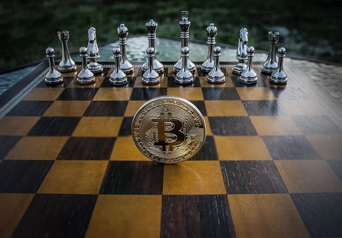
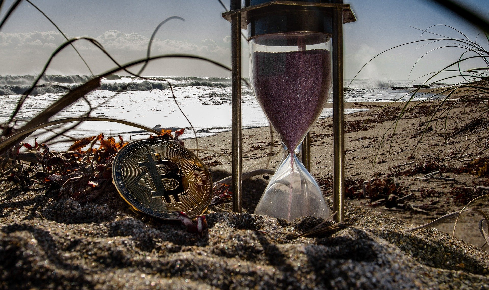
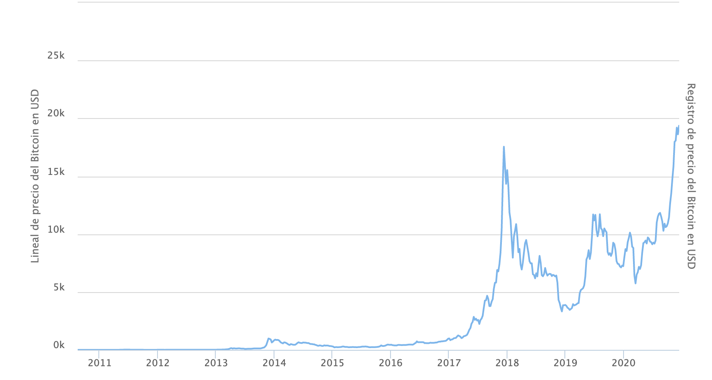

LAS CRIPTOMONEDAS, UN PASO HACIA EL FUTURO
Bienvenido a mi blog sobre el reciente mundo de las criptomponedas. Aquí te explicaré brevemente lo que necesitas saber sobre como funcionan las criptomonedas y en concreto el Bitcoin. Además, contamos con varias guías y referencias para poder introducirte más adentro de la fiebre de este nuevo mercado.
¿Qué es una criptomoneda? ¿Cómo funcionan las criptomonedas? ¿BitCoin?
Las criptomonedas, o también denominadas criptodivisas, son monedas virtuales, en algunos casos descentralizadas, creadas gracias a un código computado.
Vale, otra vez ... Analicemos está definición para poder comprender su potencia.
Una criptomoneda es una cadena de datos digital, que indica una cantidad de unidades de activos. Es decir, son cadenas de bloques de datos que viajan mediante un protocólo de Internet llamado P2P.
Este viaje se caracteriza por poseer un alto nivel de seguridad entra cada transacción de unidades. De manera que permite el flujo de dinero instantaneo y seguro.
Que una criptomoneda sea descentralizada significa que no pertenece a una entidad alguna o gobierno.
¿Y de donde nacen estas divisas?


Aquí entra el concepto de minar 'tokens', que es obtener beneficio de una operación de flujo segura. Como puedes observar en las imagenes que están situadas encima nuestra, muestran tarjetas gráficas, utilizadas para el minado de criptomonedas.
Es decir, el minado consiste en la creación de nuevas divisas o fracciones de cierto token.
Los 'tokens' son el nombre técnico de cada criptomoneda, y con su minado se produce la confirmación de transacciones realizadas gracias a esa creación de nuevos bloques de divisas con código abierto y desde cualquier parte del mundo.
De esta manera, el bitcoin y muchas otras criptomonedas son descentralizadas.
Historia del BitCoin
¿Quién y cuando creó Bitcoin?
Bueno... Bitcoin fue desarrollado por Satoshi Nakamoto, en 2009. En 2010, Satoshi abandonó el proyecto por razones desconocidas.
Pero desde entonces la comunidad de Bitcoin ha crecido de forma exponencial y cuenta con numerosos desarrolladores que trabajan para el protocolo.
A continuación se muestra una imagen de una gráfica sobre la evolución de precio en la vida del Bitcoin, que posteriormente procedermos a comentar :

Como vemos en la imagen, en 2015 el bitcoin tenía un precio de menos de 100 € y en 2018 poseía un valor de 19.783 € y ahora en este diciembre de 2020 alcanzó los 21.352 €.
Esto nos muestra la variabilidad que posee el mercado.
¿Por qué Bitcoin u otras Criptomonedas tienen valor real?
Los Bitcoins tienen valor porque son útiles como moneda. Tiene las características del dinero (durabilidad, portabilidad, fungibilidad, escasez, divisibilidad y reconocibilidad) basado en propiedades matemáticas en vez de confiar en propiedades físicas (como el oro y la plata) o confiar en autoridades centralistas (como las monedas fiduciarias).